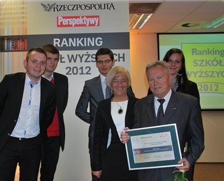
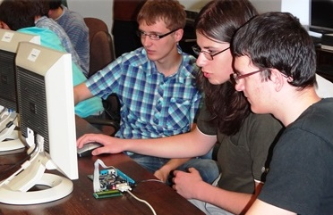
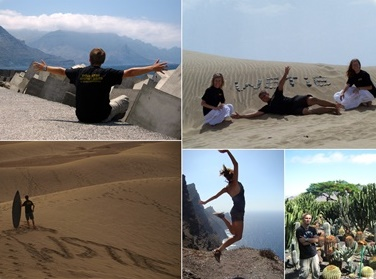

Вища Школа Туризму і Екології в Сухій-Бескидзькій
Вища Школа Туризму і Екології в Су́хій-Бески́дзькій була створена в 2001 році як приватний навчальний заклад. За короткий час вона стала потужним центром міжнародної освіти, залучаючи студентів з усієї Польщі та з-за кордону. ВШТіЕ гарантує студентам спеціалізовані знання та досвід, які передаються найкращими викладачами. Школа співпрацює з бізнесом та місцевими органами влади, завдяки чому студенти проходять цікаву практику та професійні стажування, а також отримують численні пропозиції праці.
Місце розташування школи – ренесансний суський замок, який називають „невеликим Вавелем”. В старовинних стінах містяться сучасні, ідеально обладнані лекційні зали та кабінети, а також комп’ютерні лабораторії. Студенти найбільше цінують затишну, унікальну атмосферу навчального закладу і широкі можливості здобування не лише теоретичних, але і практичних знань в країні та за кордоном.
В університеті навчається молодь не лише з регіону Малопольського воєводства. Широкий спектр програм й ефективний процес навчання також є магнітом для студентів з усієї Польщі та з-за кордону, напр. з Німеччини, Франції, Ірландії, Великобританії, Угорщини, Росії, України, які цінують європейські стандарти освіти, відкритість та гнучкість.
Вища Школа Туристики і Екології, є єдиним вищим навчальним закладом в 2014 році, який став лауреатом Нагороди за Якість Навчання Sapere Auso. Її прийняв Малопольський Стипендіальний Фонд заснований Сеймом Малопольського воєводства. В управління та раду директорів фонду входять представники влади Кракова, наукової спільноти і Костьолу.
Престижною нагородою відзначається вища школа, яка має видатні досягнення в праці з молоддю, і може похвалитись освітніми досягненнями у формуванні молодого покоління Малопольського воєводства.
Другий раз поспіль 1 місце в престижному рейтингу. Рейтинг вищих шкіл 2014р., який показує найкращі туристичні навчальні заклади в Польщі, виник спираючись на анкетні дослідження вищих навчальних закладів, що мають повноваження до ведення напрямку Туризм і Рекреація. В цьогорічному рейтингу відмовилися від поділу на державні і приватні навчальні заклади, натомість ввели поділ на профілі навчання: практичний та академічний. ВШТіЕ перемогла в категорії шкіл пропонуючих найкращу професійну підготовку.
В рейтингу оцінювався рівень пристосованості пропонованого навчання до потреб на ринку праці, через кваліфікацію і компетенцію тих, хто на цей ринок виходить. Велика увага зверталася на вивчення мов, спеціальності, наявність комп’ютерних лабораторій, практики в Польщі і закордоном, заняття за межами навчального закладу, отримання інформації про подальшу долю випускників ВШТіЕ. Відмічена можливість отримання досвіду від спеціалістів в бізнесі та економіці. Також був прийнятий до уваги науковий потенціал університету: цілковита задіяність співробітників в напрямку пов’язаному з туризмом, кількість публікацій викладачів за останні 5 років, участь в конференціях, наукові досягнення студентів, кількість наукових грантів, які отримав навчальний заклад, кількість виконаних економічних експертиз в туристиці та рівень закордонної співпраці.
Вища Школа Туризму і Екології була нагороджена почесною відзнакою «Za Zasługi dla Turystyki» Міністра спорту і туризму, яка визнає заслуги для розвитку польського туризму і зміцнення міжнародного співробітництва в цій галузі.
Успіх школи вимірюється також досягненнями студентів. Це можливо, завдяки поєднанню науки з практикою, з акцентом на останню. Студенти не лише здобувають знання, але також розвивають інтереси і відкривають власний потенціал. Ті, які хочуть досягти більше, можуть реалізуватися в численних секціях і наукових колах. Школа створює можливість поєднати науку з практикою вже в процесі навчання.
Запровадження навчання на англійській мові є очевидним наслідком рішення про інтернаціоналізацію школи – її відкриття на міжнародні ринки, що збільшує можливості і шанси для випускників на ринку праці. Англійською мовою навчаються студенти як з Польщі, так і з-за кордону.
Навчальний заклад міцно вкоренився в регіоні. Він активізує установи та організації для реалізації різних проектів для розвитку регіону та його жителів. Зі школою активно співпрацює бізнес, запрошуючи до себе талановитих студентів, які розглядаються в якості потенційних співробітників. Місією ВШТіЕ є така підготовка молоді, щоб кожний випускник міг знайти роботу відповідно до своєї освіти. Навчальна програма будується таким чином, щоб бути співвіднесеною з ринковим оточенням, а пропоновані напрямки і спеціальності мають випереджати попит роботодавців. ВШТіЕ підвищує шанси студентів на європейському ринку праці за допомогою можливості отримання під час навчання додаткових знань на курсах, семінарах, тренінгах та зустрічах з представниками суспільного, політичного та наукового життя протягом всього періоду навчання.
ВШТіЕ має одну з найбільш цікавих в Польщі пропозицій професійних практик та студентських стажувань в країні та за кордоном. Школа організовує виїзди на практику, закордонні стажування та стажування в межах країни, а часто виступає посередником в пошуку праці. Академічний Центр кар’єр щороку готує пропозицію від найкращих працедавців. Студенти мають до розгляду кілька сотень робочих місць в компаніях всієї Європи та США. Це є результатом активної співпраці з польськими та закордонними діловими партнерами. Практика за кордоном є не лише важливим професійним досвідом, але також має конкретну фінансову вигоду; студент-практикант отримує окрім практичних знань ще й достатні кишенькові гроші, безкоштовне проживання та харчування, а також повернення транспортних витрат. Студенти ВШТіЕ проходять практику між іншим в таких місцях: США – Нью-Йорк, Іспанія – Канарські острови – Гран Канарія та Ла Пальма, Майорка, Мальта, Ірландія, Німеччина, Франція, Туніс, Туреччина, Єгипет, Італія, Греція – між ін. Закінф, Родос, Кос, Східний Пелопонес. Центр кар’єр надає допомогу при підготовці аплікаційних документів, при описанні професійної придатності та можливості вибору професійної кар’єри. Також важливим є широкий вибір соціальних та мотиваційних стипендій, включно зі стипендіями для іноземних студентів.
Академія бізнесу ВШТіЕ є авторським проектом школи, яка впроваджує інноваційний проект, спрямований на поєднання величезного потенціалу навчального закладу з потребами ринку. Створена унікальна програма ефективної практичної підготовки студентів, які під керівництвом досвідчених викладачів, практиків та менеджерів дізнаються, як використовувати отримані знання в реальних бізнес-проектах.
Дуже важливе місце в діяльності ВШТіЕ займає співпраця з іноземними партнерами з усього світу, яка підвищує якість освітнього процесу, слугує обміну досвідом та сприяє пропагуванню регіону та Польщі на міжнародній арені.
Сайт: www.wste.edu.pl
ФАКУЛЬТЕТИ ТА СПЕЦІАЛЬНОСТІ
Факультет туризму та рекреації
БАКАЛАВР
- туристичне обслуговування,
- готельно-ресторанний бізнес,
- менеджер SPA &Wellness,
- управління регіональними та місцевими промоціями,
- управління туризмом.
МАГІСТР
- управління туризмом і рекреацією,
- міжнародний туризм.
Факультет інформатики
БАКАЛАВР / ІНЖЕНЕР
- інженерне програмування,
- системи баз даних,
- мультимедійні технології і комп’ютерна графіка.
- Факультет соціальних наук.
МАГІСТР
- зв’язки з громадськістю (public relations),
- журналістика і громадські медіа,
- регіональна політика та політика самоврядування.
Тип закладу: